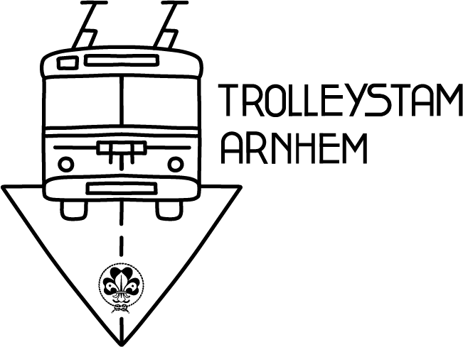
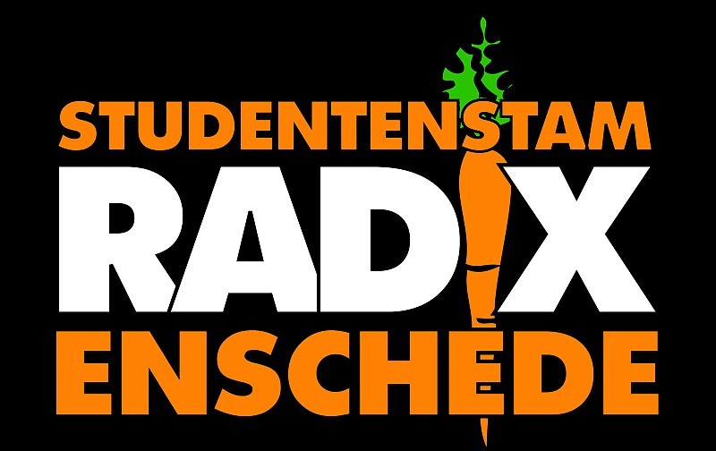
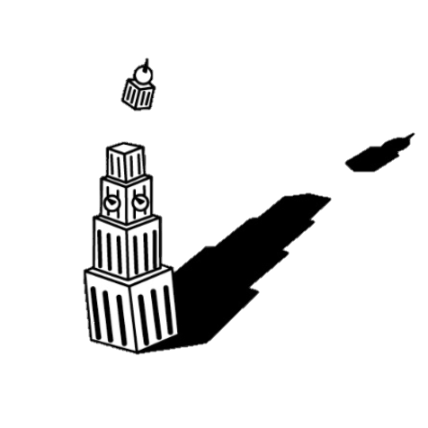
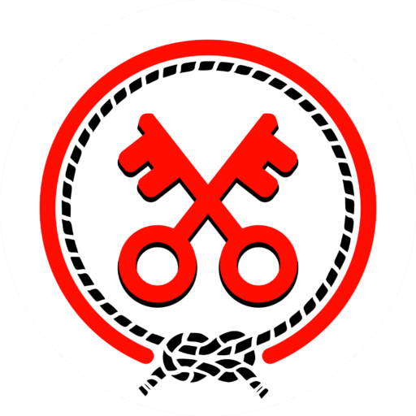
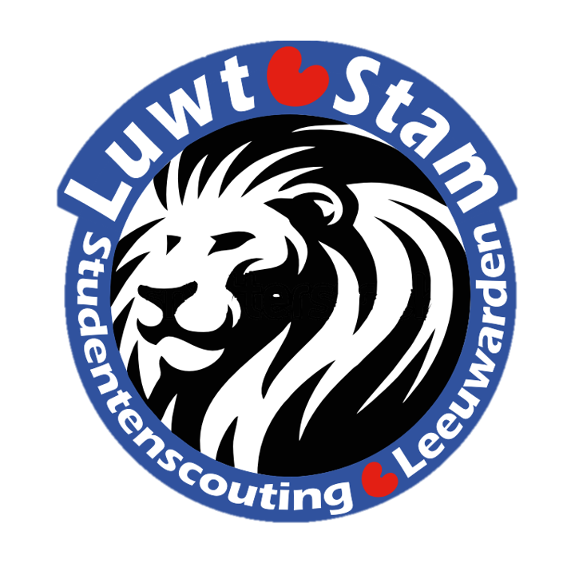
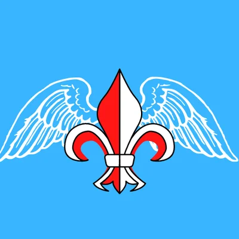
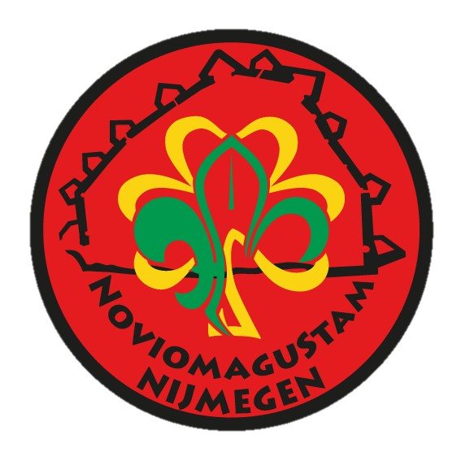

Eigenlijk precies wat de naam aangeeft. Studentenscouting is gericht op scouts die studeren en graag bij een vereniging willen die bij hun interesses aansluit. Studentenscouting is ook gericht op studenten die een leuke combinatie zoeken van scoutingactiviteiten en het studentenleven.
Inmiddels is studentenscouting ook te vinden in de meeste studentensteden in Nederland!
Hieronder vind je een lijst van steden met een eigen studentenscouting!

De Trolleystam staat bekend om zijn zeer enthousiaste en hechte groep scouts! Wij hebben om de week op dinsdagen toffe opkomsten op onze blokhut. In de andere weken zijn wij te vinden bij onze stamkroeg in het centrum van Arnhem onder het genot van een lekker hapje en drankje!
Voor meer informatie over de Trolleystam, klik hier
De Delftsche Zwervers zijn de oudste studentenstam in Nederland, ze bestaan maar liefst al 100 jaar. Een paar keer per week komen we bij elkaar om te eten, bij te kletsen en om avondprogramma’s bij te wonen. We hebben een ontspannen, gezellige sfeer zonder ontgroeningen, waar iedereen elkaar kent en zichzelf kan zijn.
Voor meer informatie over de Delftsche Zwervers, klik hier

Als je in Twente studeert, dan is Radix dé plek om je studententijd op een scoutingmanier te beleven. Bij ons draait het allemaal om gezelligheid, leuke activiteiten en vriendschappen voor het leven.
Voor meer informatie over Radix, klik hier

In de mooiste en noordelijkste studentenstad van Nederland, Groningen, kan je de Martinistam vinden. De Martinistam, vernoemd naar de welbekende toren in het centrum van Groningen, combineert de gezelligheid van een studentenvereniging met het avontuurlijke van Scouting.
Voor meer informatie over de Martinistam, klik hier

In het stadje Leiden, ook wel bekend als de Sleutelstad, vind je de leukste studentenscouting vereniging van deze regio. Stap binnen in de wereld van de Sleutelstam!
Voor meer informatie over de Sleutelstam, klik hier

Onze stam is dan ook gevestigd in de mooie hoofdstad van Friesland. Elke week is er op woensdag avond een mogelijkheid om gezellig samen te komen en spectaculaire activiteiten te ondernemen. De ene week draaien we een programma dat geregeld wordt door de leden, de andere week is er een borrel waarbij de invulling open ligt. Onze stam is de perfecte combinatie voor wie wel gezelligheid wil tijdens zijn studententijd, maar geen affiniteit heeft met de “gewone” studentenverenigingen die Leeuwarden biedt.
Voor meer informatie over de Luwt Stam klik hier

In Maastricht is de MOSA Stam de enige Engelstalige studentenstam van Nederland. Ze zijn Engelstalig vanwege de vele internationale scouts in Maastricht. Dit belemmert ze niet om wel mee te doen aaan alle leuke Studentenscouting Nederland activiteiten. Kom bij ze op bezoek om te kijken hoe gezellig ze zijn en de internationale sfeer mee te krijgen!
Voor meer informatie over de MOSA stam, klik hier

Sinds 12-12-12 is de NovioMaguStam de leukste stam van Noviomagus, mooiste stad aan de Waal. Onze leden worden NMS’ers genoemd en houden stuk voor stuk van brie. Tijdens onze opkomsten combineren wij scouting met het Nijmeegse studentenleven. Om de week hebben wij een opkomst op woensdagavond, in de week dat er geen opkomst is hebben wij een borrel.
Voor meer informatie over de NovioMagusStam klik hier
De Kruikenstam bevindt zich in het altijd gezellige Tilburg. Eens per twee weken hebben we op dinsdagavond een opkomst. Deze opkomst wordt georganiseerd door een van de leden en daardoor doen we veel verschillende dingen.
Voor meer informatie over de kruikenstam, klik hier
In het midden van Nederland vind je de gezellige U.F.O.-Stam. Als vereniging zorgen we ervoor dat je toffe, uitdagende en gezellige activiteiten kan ondernemen. Elke jaar verandert onze afkorting en dit jaar staat deze voor Uitlaatklep voor Feest en Ondeugd!.
Voor meer informatie over de U.F.O.-Stam klik hier
In Wageningen is sinds 1983 de Yggdrasilstam te vinden. De stam is in het leven geroepen door enthousiaste scouts die ‘thuis thuis’ actief waren bij hun scouting, en in Wageningen ook graag scoutingactiviteiten wilden doen.
Voor meer informatie over de yggdrasilstam, klik hier
@studentenscoutingeindhoven
eindhoven@studentenscouting.nl

Studentenscouting Eindhoven